Habeeb Abdullah
ID: 202210158
Supervised by:
Dr Ayman Mansour
Course: 307498 – Graduation Project
Semester: Second Semester, 2026/2027
This project presents an AI-based Financial Risk and Bankruptcy Prediction Decision Support System that integrates Business Intelligence, machine learning, clustering analysis, and interactive data visualization techniques. The study utilizes financial data from Taiwanese companies to analyze financial behavior, assess bankruptcy risk, and support informed financial decision-making.
The project workflow included data preprocessing, exploratory data analysis, statistical testing, feature selection, and class imbalance handling. Predictive models were developed using XGBoost and Multi-Layer Perceptron (MLP) Neural Networks, while K-Means clustering was applied to identify financial company segments. In addition, interactive dashboards were created in Power BI to transform analytical results into practical decision-support tools.
The results demonstrated strong predictive performance, with XGBoost achieving the best overall bankruptcy prediction capability. The analysis highlighted the importance of profitability, leverage, debt structure, cash flow performance, and retained earnings in assessing financial risk. Clustering analysis further revealed distinct company groups with different financial behavior patterns and risk characteristics.
Overall, the integration of predictive analytics, clustering, and Business Intelligence provided a comprehensive framework for financial risk assessment, bankruptcy prediction, and decision support. The developed system enables financial monitoring, early risk detection, and data-driven strategic decision-making.
I would like to express my sincere appreciation to my supervisor and instructors for their guidance, valuable insights, and continuous support throughout the completion of this project. Their knowledge, feedback, and encouragement contributed significantly to the successful development of this work and enriched my understanding of Business Intelligence, Data Analytics, and Artificial Intelligence applications.
I am also deeply grateful to my family for their unwavering support, patience, and motivation during my academic journey. Their encouragement provided me with the determination and confidence needed to overcome challenges and achieve my goals.
I would like to thank my friends and colleagues for their support, cooperation, and positive encouragement throughout the project. Their assistance and shared experiences made this journey both productive and enjoyable.
In addition, I would like to acknowledge the faculty and staff members whose dedication to education and academic excellence provided a stimulating learning environment that fostered growth, innovation, and critical thinking. Finally, I extend my gratitude to everyone who contributed, directly or indirectly, to the completion of this project. Your support and encouragement have played an important role in both my academic achievements and personal development.
This project aims to develop an intelligent financial risk analysis and bankruptcy prediction system using Business Intelligence and machine learning techniques. The analysis is based on real financial data from Taiwanese companies and focuses on identifying bankruptcy risk patterns, evaluating financial performance, and supporting financial decision-making. The study utilizes key financial indicators related to profitability, leverage, liquidity, growth, and financial stability.
Several analytical approaches were applied, including exploratory data analysis, statistical testing, machine learning, clustering analysis, and interactive dashboard visualization. Python and Google Colab were used for data preprocessing, statistical analysis, and predictive modeling, while Microsoft Power BI was used to develop interactive dashboards and business intelligence visualizations.
The project evaluates the ability of machine learning models to predict bankruptcy risk, compares financial behavior among companies, and applies clustering techniques to identify groups with similar financial characteristics. The final outcome is a Decision Support System (DSS) that integrates predictive analytics and interactive visualization to support financial monitoring, bankruptcy risk assessment, and data-driven decision-making (Power, 2002).
The main objectives of this project are:
The dataset used in this project was obtained from the UCI Machine Learning Repository and is based on financial data collected from the Taiwan Economic Journal (TEJ) database.
*Dataset Source: https://archive.ics.uci.edu/dataset/572/taiwanese+bankruptcy+prediction
The dataset contains 6,819 company records and 96 financial indicators related to profitability, liquidity, leverage, operational efficiency, and financial stability. It also includes a bankruptcy label, making it suitable for predictive modeling, statistical analysis, clustering, and Business Intelligence applications.
Several financial datasets were reviewed before selecting the final dataset. This dataset was chosen because it provides real company financial records, a clearly defined target variable, and a rich set of financial indicators that support bankruptcy prediction and financial risk analysis. Although the data originates from Taiwanese companies, the financial indicators used are widely recognized in financial analysis and can be applied to organizations in different countries where similar financial data is available. However, prediction results and financial behavior patterns may vary across economic environments and regulatory frameworks.
The dataset is publicly available through the UCI Machine Learning Repository (Dua & Graff, 2019).
The dataset contains 6819 rows and 96 columns. The dataset appears to contain complete records with no significant missing values.
Observation: The dataset contains 6819 rows and 96 columns, providing sufficient financial indicators for bankruptcy prediction analysis. The dataset contains many financial indicators related to company profitability, liquidity, debt structure, operational efficiency, and financial stability.
The table below summarizes key financial indicators used in this project. Financial ratios are widely used to evaluate company performance and bankruptcy risk (Altman, 1968).
| Financial Indicator | Description |
|---|---|
| ROA(A) before interest and % after tax | Measures company profitability relative to assets. |
| ROA(B) before interest and depreciation after tax | Measures profitability after depreciation effects. |
| ROA(C) before interest and taxes before depreciation | Measures operational profitability before taxes and depreciation. |
| Operating Gross Margin | Indicates operational profitability before expenses. |
| Realized Sales Gross Margin | Measures actual profit generated from sales. |
| Operating Profit Rate | Measures profit generated from operations. |
| Net Profit before Tax | Represents company profit before taxes. |
| Net Income to Total Assets | Measures profitability relative to total assets. |
| Total Asset Growth Rate | Indicates company asset growth over time. |
| Current Ratio | Measures short-term liquidity capability. |
| Quick Ratio | Measures liquidity excluding inventory. |
| Working Capital to Total Assets | Measures short-term financial stability. |
| Cash Flow Rate | Measures cash flow performance efficiency. |
| Cash Flow to Sales | Indicates the relationship between sales and cash flow. |
| Debt Ratio % | Measures the percentage of debt financing. |
| Liability to Equity | Measures liabilities relative to shareholder equity. |
| Total Debt to Total Net Worth | Measures debt relative to net worth. |
| Borrowing Dependency | Indicates dependency on borrowed funds. |
| Retained Earnings to Total Assets | Measures accumulated profitability strength. |
| Inventory Turnover Rate | Measures inventory management efficiency. |
Financial ratios are widely used to evaluate company performance and bankruptcy risk (Altman, 1968).
Exploratory Data Analysis (EDA) was conducted to understand the dataset structure, quality, distribution, and financial patterns before model development.
Exploratory Data Analysis (EDA) was conducted to understand the dataset structure, quality, distribution, and financial patterns before model development.
The following analyses were performed:
These analyses helped identify financial patterns and indicators related to bankruptcy risk.
Initial data validation and cleaning were performed to assess dataset quality before preprocessing and model development.
The dataset was well-structured, with no significant missing values, duplicate records, or formatting issues. Therefore, only minimal preprocessing was required
Minimal preprocessing steps were applied to support exploratory analysis and predictive modeling.
Checks for missing values in the dataset.
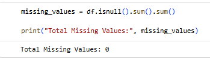
No missing values were detected in the dataset, indicating clean and complete financial records.
Checks for duplicate records in the dataset.
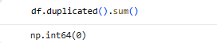
No duplicate records were found in the dataset, indicating clean and consistent financial data.
The following financial indicators were selected because they represent important aspects of financial performance, liquidity, profitability, cash flow, and debt structure. These indicators were used to analyze financial behavior and bankruptcy risk patterns.
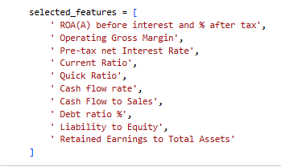
Provides statistical summaries of the selected financial indicators.
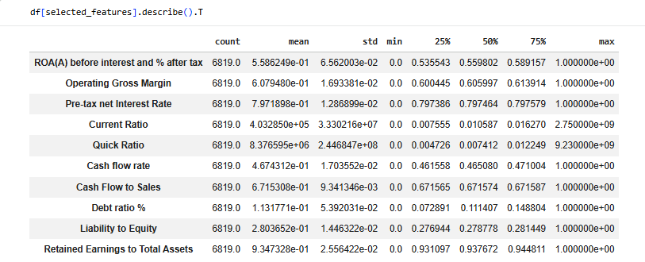
Observation:
The statistical results show noticeable variation across several financial indicators. Some variables, especially liquidity-related indicators, contain large value ranges and potential outliers. Profitability and debt-related indicators also vary across companies, reflecting differences in financial performance and bankruptcy risk. These findings support the need for preprocessing techniques such as scaling before model training.
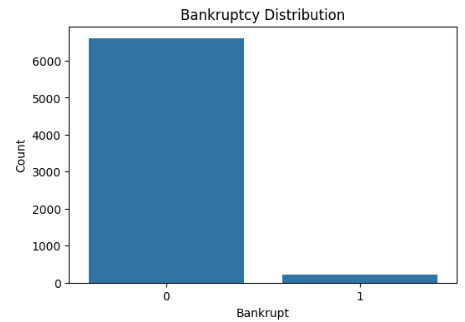
Observation: The dataset is highly imbalanced, with 6,599 non-bankrupt companies and 220 bankrupt companies. The visualization confirms a significant class imbalance, as non-bankrupt companies greatly outnumber bankrupt companies. This pattern reflects real-world financial datasets and highlights the need for class balancing techniques during model development.
Explores the distribution of selected financial indicators to better understand data behavior and variability.
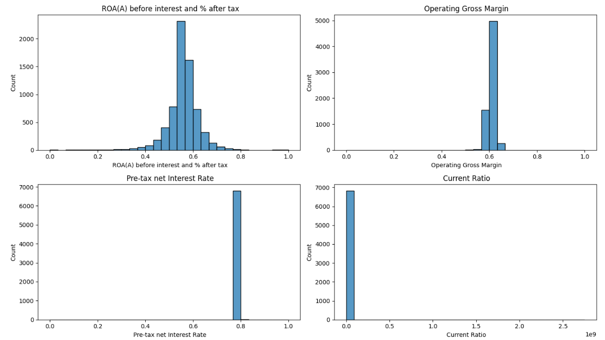
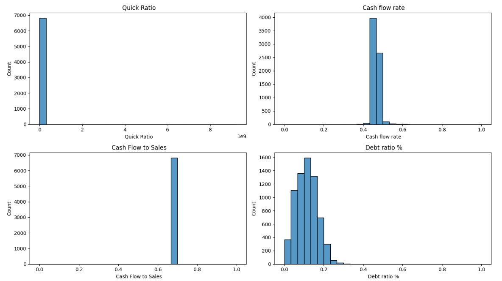
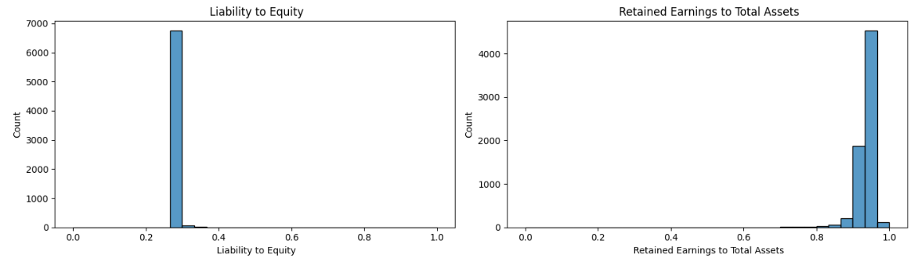
Observation:
The distributions show different patterns across the selected financial indicators. Liquidity-related variables such as Current Ratio and Quick Ratio appear highly skewed and contain extreme values, while profitability measures are more concentrated around their central values. These findings indicate the presence of outliers and support the need for preprocessing before model development.
Examines whether the selected financial indicators contain extreme values that may affect statistical analysis and model performance.
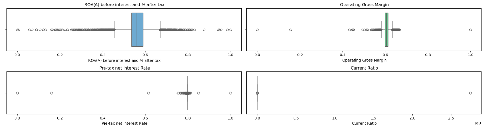
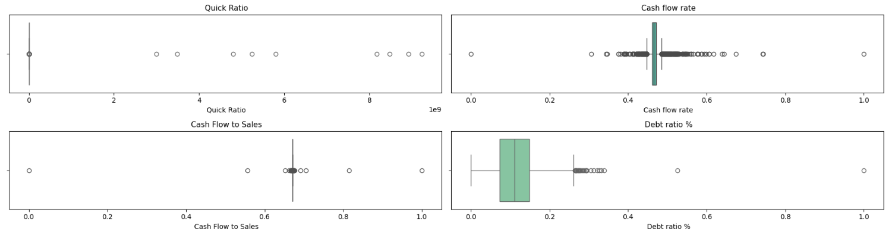
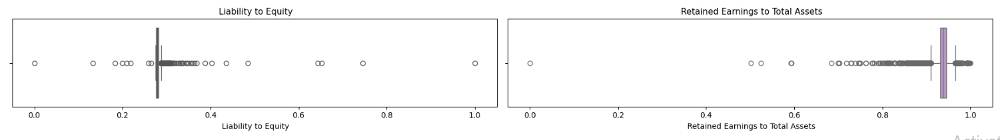
Observation:
The boxplots reveal the presence of outliers across multiple financial indicators, especially liquidity and debt-related variables. These observations may influence model performance and support the use of preprocessing techniques such as scaling and imbalance handling.
These outliers were not removed directly because they may represent financially distressed companies or unusual financial conditions that are important for bankruptcy prediction analysis (Han, Kamber, & Pei, 2012).
Correlation Heatmap This step analyzes the linear relationships between selected financial indicators and bankruptcy risk.
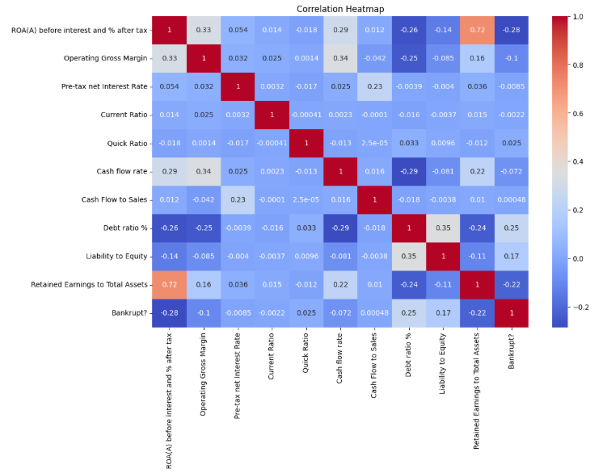
The following step ranks financial indicators based on their correlation strength with bankruptcy risk.
Observation:
The correlation analysis shows that most financial indicators have weak to moderate relationships with bankruptcy risk. Debt Ratio (%) and Liability to Equity exhibit the strongest positive correlations with bankruptcy, while ROA(A) before interest and % after tax and Retained Earnings to Total Assets show the strongest negative correlations. These results suggest that companies with higher debt levels are more likely to face bankruptcy, whereas profitable companies with stronger retained earnings tend to have lower bankruptcy risk.
Business Insight The findings indicate that leverage-related indicators are important predictors of bankruptcy risk. Therefore, debt structure and profitability measures should be considered key variables during predictive model development.
A comparative analysis was conducted to examine differences in selected financial indicators between bankrupt and non-bankrupt companies. Boxplots were used to identify patterns and variations associated with bankruptcy risk.
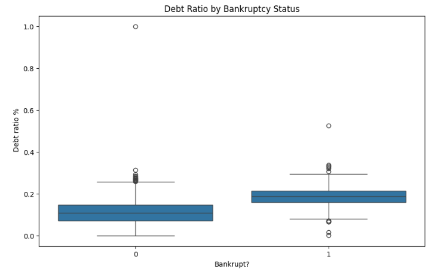
Observation:
The boxplot shows that bankrupt companies generally have higher debt ratio values than non-bankrupt companies. This suggests that greater reliance on debt financing may increase financial risk and the likelihood of bankruptcy. A number of outliers are present in both groups, indicating variability in company debt structures.
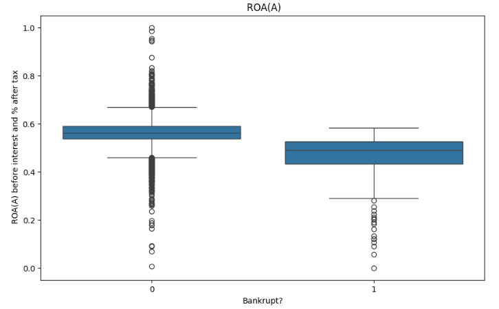
Observation:
The results indicate that non-bankrupt companies generally have higher ROA(A) values than bankrupt companies. This suggests that stronger profitability and more efficient asset utilization are associated with lower bankruptcy risk, while lower profitability may signal financial distress.
This step summarizes selected financial indicators for bankrupt and non-bankrupt companies to support financial insight generation.
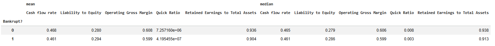
The summary table shows that bankrupt companies generally have higher Liability to Equity values and lower profitability-related indicators compared to non-bankrupt companies. Non-bankrupt firms exhibit stronger Operating Gross Margin, Cash Flow Rate, and Retained Earnings to Total Assets, suggesting better financial stability and lower bankruptcy risk.
Bankruptcy Distribution Across Debt Categories:
Observation: The results show that bankruptcy cases become more frequent as debt levels increase. The High Debt category has the highest bankruptcy percentage (8.27%), compared with 1.10% in the Medium Debt category and 0.31% in the Low Debt category. This suggests that higher financial leverage is associated with greater bankruptcy risk.
This section applies statistical testing methods to determine whether the differences between bankrupt and non-bankrupt companies are statistically significant. The independent samples T-test was used to compare the mean values of both groups.
Hypotheses:
T-Test Results:
Result Interpretation:
The T-test results indicate statistically significant differences in ROA(A), Debt Ratio %, and Cash Flow Rate between bankrupt and non-bankrupt companies (p < 0.05). In contrast, Current Ratio does not show a statistically significant difference (p > 0.05). These findings suggest that profitability, leverage, and cash flow measures are more strongly associated with bankruptcy risk than Current Ratio in this dataset.
Several challenges were identified during the exploratory analysis process:
These challenges will be addressed during preprocessing and model development stages.
Interactive Power BI dashboards were developed to visualize financial risk patterns and support Decision Support System (DSS) objectives.Additional analytical indicators were created based on the results of exploratory analysis, clustering, and predictive modeling to provide clear and actionable bankruptcy risk indicators.
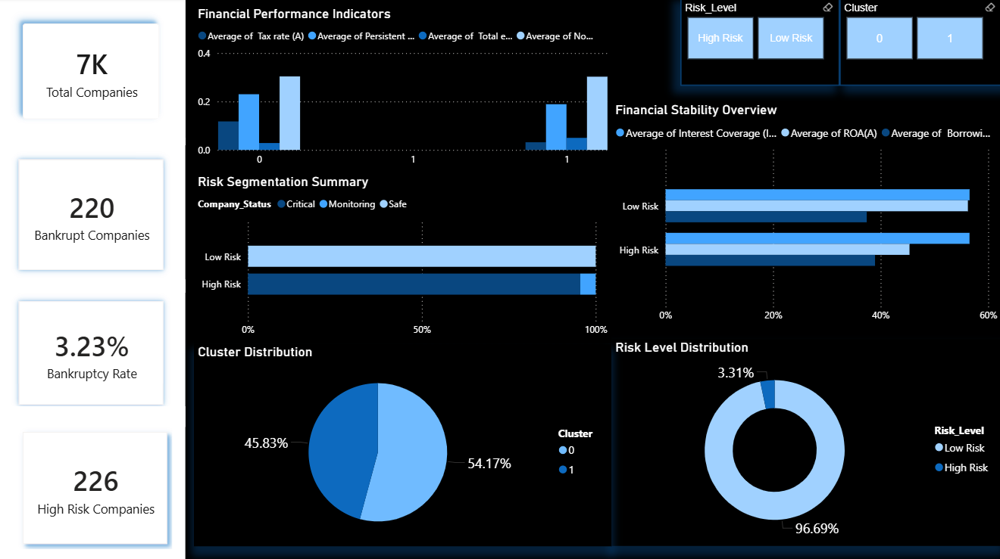
This dashboard provides an executive overview of bankruptcy risk, financial performance, and company segmentation. It combines financial indicators, clustering results, and risk classification outputs to support financial risk assessment and decision-making.
• KPI Cards: Display total companies, bankrupt companies, bankruptcy rate, and high-risk companies.
• Financial Performance Indicators: Compare key financial metrics across different risk groups.
• Risk Segmentation Summary: Shows the distribution of companies between High Risk and Low Risk categories.
• Financial Stability Overview: Compares financial stability indicators across risk levels.
• Cluster Distribution: Presents the proportion of companies within each cluster generated by K-Means clustering.
• Risk Level Distribution: Displays the percentage of High Risk and Low Risk companies.
• Filters and Slicers: Enable interactive exploration by Risk Level and Cluster.
• Most companies are classified as Low Risk, while only a small proportion are considered High Risk.
• Bankrupt companies represent a small percentage of the dataset, indicating class imbalance.
• Low-risk companies generally demonstrate stronger financial performance and financial stability.
• Clustering results reveal distinct financial behavior patterns among companies.
• The dashboard supports early identification of financially distressed companies and enhances financial risk monitoring and decision-making.
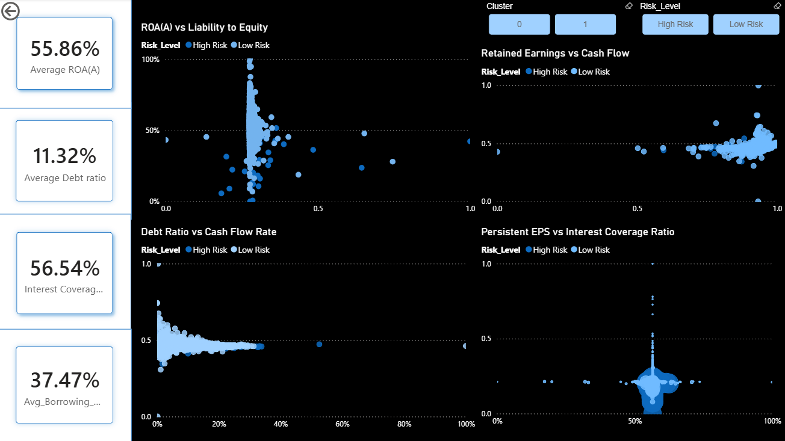
This dashboard provides a detailed analysis of the relationships between key financial indicators and bankruptcy risk. It helps identify financial behavior patterns, compare risk groups, and support bankruptcy risk assessment through interactive visual exploration.
• KPI Cards: Display average values of ROA(A), Debt Ratio, Interest Coverage Ratio, and Borrowing Dependency.
• ROA(A) vs Liability to Equity: Examines the relationship between profitability and financial leverage across risk groups.
• Retained Earnings vs Cash Flow: Analyzes the connection between retained earnings and cash flow performance.
• Debt Ratio vs Cash Flow Rate: Evaluates how debt levels relate to companies' cash flow positions.
• Persistent EPS vs Interest Coverage Ratio: Explores the relationship between earnings stability and the ability to cover interest obligations.
• Filters and Slicers: Allow users to interactively explore results by Risk Level and Cluster.
• Companies with stronger profitability and retained earnings generally exhibit lower financial risk.
• Higher debt dependence and leverage tend to be associated with increased bankruptcy risk.
• Cash flow indicators provide additional insight into a company's financial stability and ability to manage obligations.
• The visualizations reveal distinct financial behavior patterns between risk groups.
• The dashboard supports deeper investigation of financial relationships and assists in identifying factors associated with corporate financial distress.
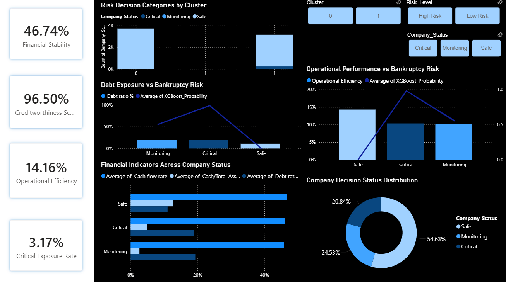
This dashboard supports decision-making and financial risk monitoring by combining predictive analytics, company classification, and financial performance indicators. It helps identify financially vulnerable companies and prioritize risk management actions.
• KPI Cards: Display Financial Stability, Creditworthiness Score, Operational Efficiency, and Critical Exposure Rate.
• Risk Decision Categories by Cluster: Shows the distribution of companies classified as Safe, Monitoring, and Critical across clusters.
• Debt Exposure vs Bankruptcy Risk: Compares debt ratio levels with predicted bankruptcy risk probabilities.
• Operational Performance vs Bankruptcy Risk: Examines the relationship between operational efficiency and bankruptcy risk.
• Financial Indicators Across Company Status: Compares key financial indicators such as cash flow rate, retained earnings, and debt ratio across decision categories.
• Company Decision Status Distribution: Displays the proportion of companies classified as Safe, Monitoring, and Critical.
• Filters and Slicers: Allow interactive analysis by Cluster, Risk Level, and Company Status.
• Most companies are classified as Safe, while smaller proportions fall into Monitoring and Critical categories.
• Companies in the Critical category generally exhibit higher bankruptcy risk and weaker financial conditions.
• Higher debt exposure is associated with increased financial risk and potential financial distress.
• Stronger operational performance is generally linked to lower bankruptcy risk.
• The dashboard provides an effective decision-support tool for identifying high-risk companies, monitoring financial health, and prioritizing risk mitigation efforts.
This section prepares the dataset for machine learning and deep learning models by removing highly correlated features, scaling the data, handling class imbalance, and splitting the dataset into training and testing sets.
A temporary column (Debt_Category) created during exploratory analysis was removed before model development.
Observation:
The final dataset contains only variables intended for model training, helping maintain a clean and consistent feature set.
Highly correlated features were identified and removed using a correlation threshold of 0.95. This threshold was selected to eliminate only extremely redundant variables while preserving most of the financial information contained in the dataset.
Observation:
The number of features was reduced from 95 to 79, resulting in a more compact dataset while retaining the key financial indicators required for bankruptcy prediction.
The dataset was divided into training and testing subsets using stratified sampling.
Observation:
An 80/20 split was applied, with 80% of the data used for training and 20% for testing. This provided sufficient data for model training while maintaining reliable model evaluation.
StandardScaler was applied because the financial indicators have different scales and ranges. Standardization helps improve the performance of machine learning algorithms that are sensitive to feature magnitude.
Observation: The transformed features were centered around zero and scaled to a similar range, reducing the influence of differences in feature magnitudes during model training.
SMOTE (Synthetic Minority Over-sampling Technique) was applied to address the severe class imbalance in the bankruptcy dataset and improve the model's ability to learn patterns from bankrupt companies.
Observation:
Before SMOTE, the training dataset was highly imbalanced, containing 5,279 non-bankrupt companies and 176 bankrupt companies. After applying SMOTE, both classes contained 5,279 observations, resulting in a perfectly balanced training dataset. SMOTE was applied only to the training data to prevent information leakage and ensure fair model evaluation. Although the training data was balanced, the original dataset remains dominated by non-bankrupt companies, reflecting real-world bankruptcy distributions.
Observation:
The preprocessing pipeline produced a balanced training dataset with 10,558 observations and 79 features, while the test dataset retained 1,364 observations and 79 features for unbiased model evaluation.
Different machine learning and deep learning techniques were applied to analyze bankruptcy risk from multiple perspectives. The selected models were chosen based on the dataset characteristics, including nonlinear financial relationships, class imbalance, and the large number of financial indicators.
XGBoost was selected because it performs efficiently on structured financial datasets and can capture complex nonlinear relationships between financial indicators and bankruptcy risk. It is also robust to outliers and suitable for imbalanced classification problems (Chen & Guestrin, 2016).
The MLP Neural Network was used to evaluate deep learning performance on financial data. The model can learn complex interactions among financial variables and identify hidden nonlinear patterns that may not be captured by traditional machine learning methods (Haykin, 2009).
K-Means clustering was applied to group companies with similar financial characteristics. The technique helps identify hidden financial patterns and supports risk segmentation by separating companies into different financial risk groups.
• Accuracy
• Precision
• Recall
• F1-Score
• ROC-AUC Score
• Confusion Matrix
The combination of supervised and unsupervised techniques provides a comprehensive analysis of bankruptcy risk. Classification models focus on predicting bankruptcy, while clustering helps identify hidden financial risk patterns and company segments.
This section presents the machine learning and deep learning models developed to predict bankruptcy risk. The models were trained using the preprocessed financial dataset and evaluated using multiple classification metrics.
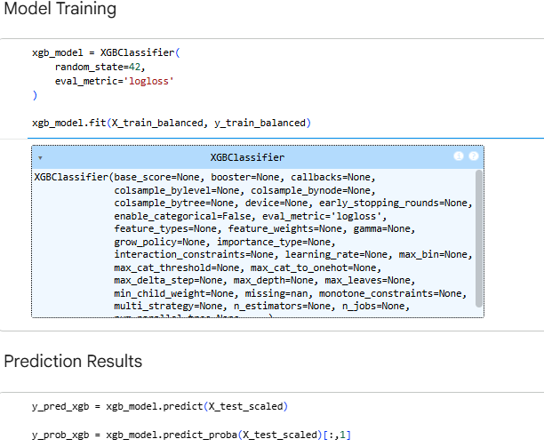
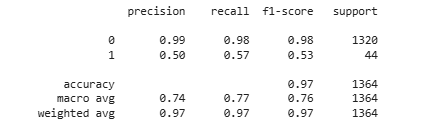
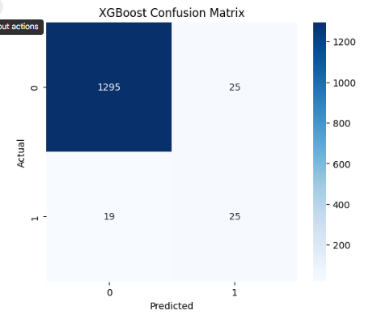
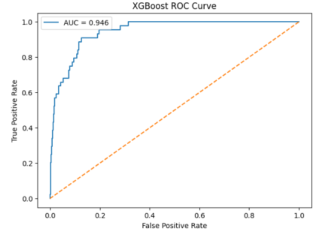
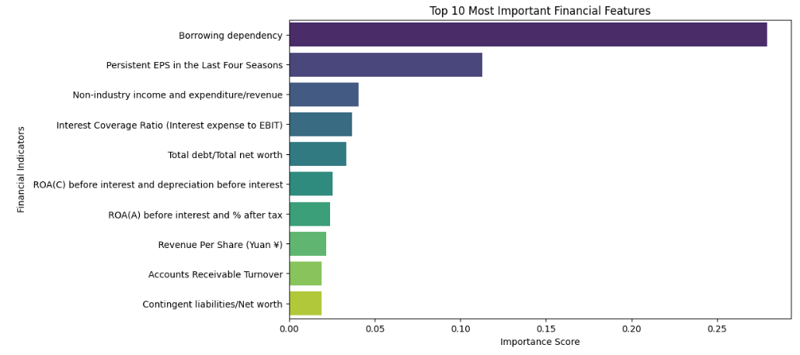
Top 10 most influential features:
The XGBoost model was trained using the balanced financial dataset to predict bankruptcy risk based on multiple financial indicators.
The model achieved strong classification performance:
Accuracy: 97%
ROC-AUC Score: 0.946
Precision: 0.50
Recall: 0.57
F1-Score: 0.53
These results indicate that the model was highly effective in distinguishing between bankrupt and non-bankrupt companies despite class imbalance challenges.
The confusion matrix results showed:
True Negatives: 1295
False Positives: 25
False Negatives: 19
True Positives: 25
The model demonstrated strong capability in identifying financially stable companies while maintaining moderate bankruptcy detection performance.
The most influential financial indicator was Borrowing Dependency with an importance score of approximately 0.279.
Other important indicators included:
Persistent EPS in the Last Four Seasons
Interest Coverage Ratio
Total Debt to Total Net Worth
ROA(A)
ROA(C)
These findings suggest that debt dependency, profitability, and earnings stability are major factors associated with bankruptcy risk.
The XGBoost model achieved strong classification performance with 97% accuracy and an ROC-AUC score of 0.946. The results indicate that debt dependency, profitability, and earnings stability are among the most influential factors associated with bankruptcy risk.
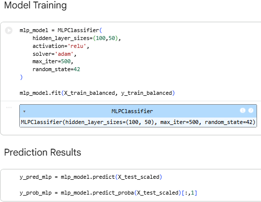
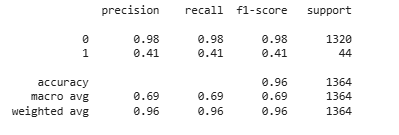
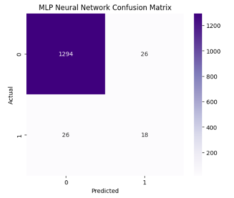
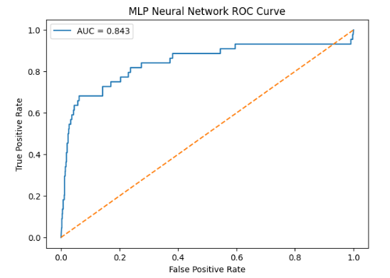
The MLP Neural Network model was trained using the balanced financial dataset to predict bankruptcy risk. The model used two hidden layers with 100 and 50 neurons, ReLU activation, Adam optimizer, and a maximum of 500 iterations.
Model Performance
The MLP model achieved good overall classification performance:
Accuracy: 96%
ROC-AUC Score: approximately 0.843
Precision for bankrupt class: 0.41
Recall for bankrupt class: 0.41
F1-Score for bankrupt class: 0.41
These results indicate that the model performed strongly in identifying non-bankrupt companies while showing moderate performance in detecting bankrupt companies.
The confusion matrix results showed:
True Negatives: 1294
False Positives: 26
False Negatives: 26
True Positives: 18
This means the model correctly classified most non-bankrupt companies, while some bankrupt companies were still difficult to identify accurately.
The ROC curve demonstrated good classification capability with an AUC score of approximately 0.843. This indicates that the MLP model was able to distinguish reasonably well between bankrupt and non-bankrupt companies.
Overall, the MLP Neural Network demonstrated effective learning of complex financial relationships and produced strong prediction performance on the bankruptcy dataset. The model successfully captured nonlinear financial patterns and provided reliable classification results for bankruptcy prediction tasks.
This section compares the performance of the machine learning and deep learning models used for bankruptcy prediction.
The evaluation focuses on classification accuracy, precision, recall, F1-score, and ROC-AUC performance to determine the most effective model for financial risk prediction.
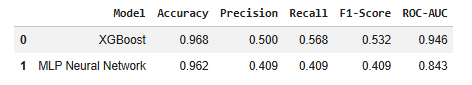
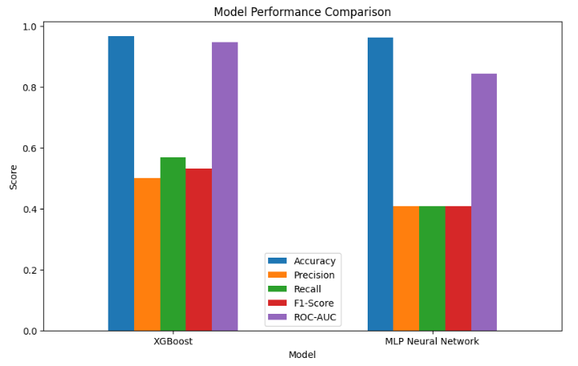
Based on the evaluation results, the XGBoost model was selected as the final bankruptcy prediction model.
The model achieved the strongest overall performance, particularly in Recall and ROC-AUC metrics, making it more suitable for financial risk prediction and bankruptcy detection.
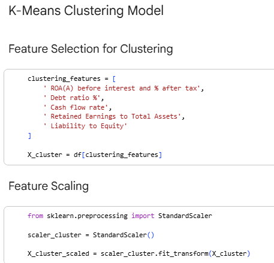
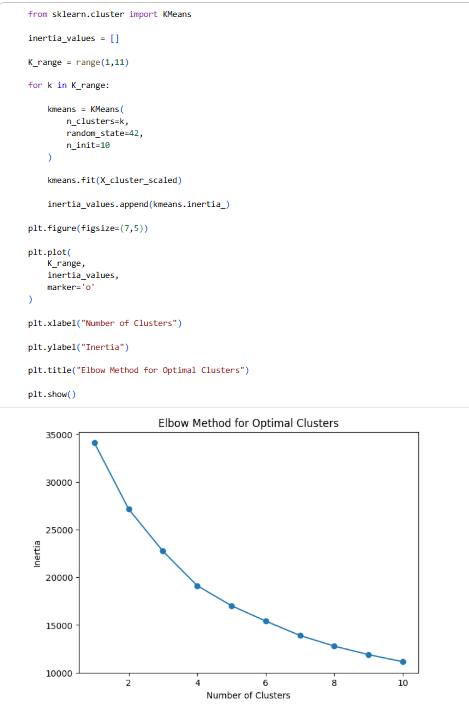
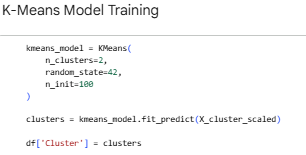
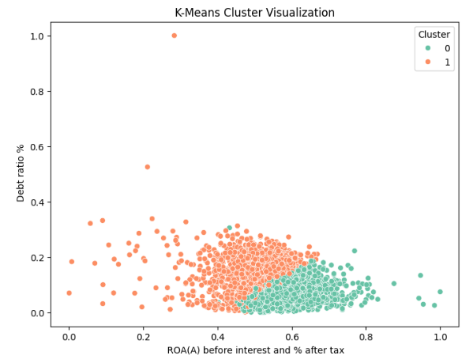
The K-Means clustering model was applied to identify hidden financial behavior patterns among companies using key financial indicators related to profitability, leverage, and financial stability.
The clustering analysis used the following financial variables:
• ROA(A) before interest and % after tax • Debt ratio %
• Cash Flow Rate
• Retained Earnings to Total Assets
• Liability to Equity
All variables were standardized using StandardScaler before clustering.
###Elbow Method Analysis
The Elbow Method was used to determine the optimal number of clusters.
Although the curve suggested that 3–4 clusters could be considered, additional testing showed that some clusters contained very few companiesو sometimes only one company, indicating potential outliers rather than meaningful financial groups.
Therefore, k = 2 was selected to achieve more balanced and interpretable company segmentation.
The final clustering model produced two groups:
• Cluster 0: 3694 companies
• Cluster 1: 3125 companies
The visualization shows partial separation between the two clusters, indicating that companies share some common financial characteristics while still exhibiting distinct financial behavior patterns.
• Cluster 0 generally represents companies with stronger profitability and lower debt levels. • Cluster 1 generally represents companies with higher leverage and greater financial risk.
The K-Means model successfully identified two meaningful financial company segments based on profitability, leverage, and financial stability indicators. While the clusters are not completely separated, they reveal useful financial behavior patterns that support risk analysis, company segmentation, and decision-making processes.
Python was used for data preprocessing, exploratory data analysis, statistical testing, machine learning, and deep learning model development. Key libraries included Pandas, NumPy, Matplotlib, Seaborn, Scikit-learn, XGBoost, TensorFlow/Keras, and Imbalanced-learn (SMOTE).
Python was selected because of its extensive support for data analytics, machine learning, and financial risk prediction.
Power BI was used to develop interactive dashboards and business intelligence visualizations. The dashboards included financial risk indicators, bankruptcy analysis, risk segmentation, and decision-support insights.
Power BI was selected because of its strong visualization capabilities and support for interactive business reporting.
Microsoft Excel was used for initial dataset inspection, data verification, and basic organization before advanced preprocessing and analysis.
Google Colab served as the primary development environment for implementing machine learning and deep learning models. It provided cloud-based computational resources and simplified notebook execution and model training.
The selected tools created an integrated analytics workflow covering data preprocessing, exploratory analysis, statistical testing, predictive modeling, and interactive visualization. This integration supported the development of a financial Decision Support System (DSS) for bankruptcy risk analysis and prediction.
The Power BI dashboards allow management to monitor:
Financial stability and creditworthiness scores
Bankruptcy risk probabilities and early warning signs
Operational efficiency and profitability indicators
Company risk categorization (Safe, Monitoring, Critical)
Financial behavior patterns across different company clusters
Managers can quickly identify financially vulnerable companies, monitor high-risk segments, and prioritize risk mitigation efforts.
The prediction models help forecast bankruptcy risk based on historical financial data before financial distress occurs.
Business Uses:
Identify companies with a high probability of financial failure
Improve risk assessment and early warning systems
Reduce financial losses and failed investments
Enhance data-driven strategic decision-making
XGBoost provides stronger prediction accuracy and better handling of imbalanced data, while the MLP Neural Network successfully captures complex nonlinear financial relationships.
K-Means clustering helps classify companies into groups based on their financial performance, profitability, and leverage.
Business Applications:
Prioritize monitoring for high-risk company segments
Design targeted financial strategies for different risk profiles
Improve resource allocation and financial planning
Optimize investor decision-making and portfolio management
By combining dashboards, prediction models, and clustering:
Together, these analytical approaches improve financial risk monitoring, reduce bankruptcy exposure, optimize resource allocation, and support smarter business decisions.
The results demonstrate that combining machine learning, clustering analysis, and Business Intelligence techniques provides valuable insights into financial risk behavior and bankruptcy prediction.
The analysis revealed that bankruptcy risk is strongly associated with:
Financially distressed companies generally exhibited higher leverage, lower profitability, weaker cash flow performance, and reduced financial stability compared to financially healthy companies.
The predictive models successfully identified financially risky companies with strong classification performance.
Among the evaluated models, XGBoost achieved the best overall performance, demonstrating superior bankruptcy prediction capability, stronger risk separation, and better handling of the imbalanced dataset compared to the MLP Neural Network model.
K-Means clustering identified two primary financial company groups:
The clustering results revealed meaningful differences in profitability, leverage, and financial stability, supporting company segmentation and financial risk monitoring.
In addition, bankruptcy probability scores generated by the XGBoost model were used to classify companies into Safe, Monitoring, and Critical risk categories, providing more detailed financial risk assessment.
The Power BI dashboards transformed analytical results into interactive decision-support tools that enabled:
The project demonstrates how Artificial Intelligence, Machine Learning, Clustering, and Business Intelligence techniques can be integrated into a practical Decision Support System (DSS) for bankruptcy prediction and financial risk analysis.
The final system supports:
This graduation project successfully demonstrated the integration of Business Intelligence, statistical analysis, machine learning, clustering, and data visualization techniques for bankruptcy prediction and financial risk analysis.
The project combined exploratory analysis, predictive modeling, clustering, and interactive Power BI dashboards to develop a practical Decision Support System (DSS) for financial monitoring and bankruptcy risk evaluation.
The analysis showed that financially distressed companies are generally associated with higher debt exposure, weaker profitability, and lower operational efficiency. Among the predictive models, XGBoost achieved the strongest overall performance in identifying financially risky companies.
The developed dashboards improved result interpretation through interactive visualization, KPI monitoring, company classification, and financial risk exploration. Overall, the project demonstrates how AI and Business Intelligence techniques can support data-driven financial decision-making and early bankruptcy risk detection.
Altman, E. I. (1968). Financial ratios, discriminant analysis and the prediction of corporate bankruptcy. Journal of Finance, 23(4), 589–609.
Power, D. J. (2002). Decision support systems: Concepts and resources for managers. Greenwood Publishing Group.
Dua, D., & Graff, C. (2019). UCI machine learning repository. University of California, Irvine, School of Information and Computer Sciences.
Han, J., Kamber, M., & Pei, J. (2012). Data mining: Concepts and techniques (3rd ed.). Morgan Kaufmann.
Chen, T., & Guestrin, C. (2016). XGBoost: A scalable tree boosting system. Proceedings of the 22nd ACM SIGKDD International Conference on Knowledge Discovery and Data Mining, 785–794.
Haykin, S. (2009). Neural networks and learning machines (3rd ed.). Pearson.